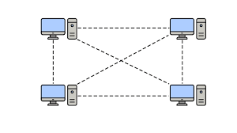
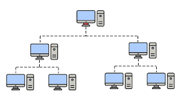

Red de área personal (PAN)
Una red de área personal (Personal Area Network, PAN) es una red de nodos de utilidad para una única persona. La distancia máxima entre los nodos suele ser de 1 metro. |
|
Red de área local (LAN)
Es un conjunto de equipos que pertenecen a la misma organización y están conectados dentro de un área geográfica pequeña (menor de 1 Km) mediante una red, generalmente con la misma tecnología (la más utilizada es Ethernet). Puede estar enlazada por cable (telefónico, coaxial o fibra óptica). Puede consistir de tan sólo dos o tres computadoras conectadas con la finalidad de compartir recursos, o puede incluir varios cientos de computadoras de diferentes tipos. La velocidad de transferencia de datos en una red de área local puede alcanzar hasta 10 Mbps (por ejemplo, en una red Ethernet) y 1 Gbps (por ejemplo, en FDDI o Gigabit Ethernet). Como también puede contener 100, o incluso 1000, usuarios. |
|
Red de área amplia (WAN)
Una red de área amplia (Wide Area Network, WAN) se usa para vincular redes LAN. Las redes que deben conectarse están muy separadas en este caso. La distancia entre los nodos puede ser de 100 a 1000 kilómetros. |
|
Red de área metropolitana (MAN)
Una red de área metropolitana (Metropolitan Area Network, MAN) funciona como una red WAN, pero para una zona geográfica determinada. |
 |
Red de área global (GAN)
La red de área global (Global Area Network, GAN) se usa para vincular redes WAN. Como el propio nombre indica, la distancia que abarca este tipo de red es global. |
 |
Red privada virtual (VPN)
La red privada virtual (Virtual Private Network, VPN) permite hacer una extensión segura de una red física ( LAN, WAN, MAN o GAN) a través de una red pública o compartida. La forma más común de establecer esta extensión es usando el internet. |
|
Topología en Bus
En esta topología, todos los dispositivos están conectados a un único cable o "bus", creando una única línea de comunicación. Es sencilla de implementar y económica, pero si el bus se daña, toda la red se ve afectada, y el rendimiento disminuye con más dispositivos. |
 |
Topología en Estrella
En la topología en estrella, todos los dispositivos se conectan a un dispositivo central, como un switch o hub. Es fácil de gestionar y si un dispositivo falla, no afecta a los demás, pero si el dispositivo central falla, toda la red se interrumpe. |
 |
Topología en Anillo
Los dispositivos están conectados en un ciclo cerrado, donde cada uno está conectado a dos dispositivos vecinos. Aunque es eficiente en redes pequeñas y medianas, cualquier fallo en un dispositivo o cable puede interrumpir toda la comunicación. |
 |
Topología en Malla
Cada dispositivo está conectado a todos los demás dispositivos de la red, proporcionando múltiples rutas de comunicación. Ofrece alta fiabilidad y redundancia, pero su implementación es costosa y compleja debido al gran número de conexiones. |
 |
Topología en Árbol (o Jerárquica)
Combinación de las topologías en estrella y bus, donde los dispositivos están organizados en niveles jerárquicos. Es escalable y fácil de gestionar, pero si el nodo principal falla, puede afectar a toda la red. |
 |
Topología Híbrida
Mezcla de dos o más topologías, aprovechando las ventajas de cada una. Es flexible y se adapta a diferentes necesidades, pero su implementación puede ser costosa y compleja debido a la combinación de diversas topologías. |
 |
Topología en Línea (o Punto a Punto)
En esta topología, dos dispositivos están conectados directamente sin intermediarios. Es simple, rápida y segura, pero no es escalable, ya que solo permite la conexión entre dos dispositivos. |
 |
Cable de Par Trenzado (UTP/STP)
El cable de par trenzado es uno de los medios más comunes para la transmisión de datos. Los cables están compuestos por pares de hilos de cobre trenzados entre sí, lo que ayuda a reducir la interferencia electromagnética. Existen versiones apantalladas (STP) y no apantalladas (UTP), dependiendo de la necesidad de protección contra interferencias.Más información |
|
Cable Coaxial
El cable coaxial tiene un núcleo de cobre que transmite señales, rodeado por un aislante, una capa metálica de apantallamiento y una cubierta externa. Es más resistente a las interferencias y a la pérdida de señal que el cable de par trenzado, pero generalmente se utiliza menos hoy en día debido a los avances en otras tecnologías. Más información |
|
Fibra Óptica
La fibra óptica utiliza hilos de vidrio o plástico para transmitir datos mediante señales de luz. Ofrece una velocidad de transmisión extremadamente alta y una gran capacidad de distancia sin pérdidas significativas. Es inmune a interferencias electromagnéticas, lo que la convierte en la opción ideal para comunicaciones de largo alcance. Más información |
 |
Radiofrecuencia (RF)
La transmisión por radiofrecuencia utiliza ondas electromagnéticas para enviar información a través del aire. Es común en redes Wi-Fi, radios, y comunicaciones móviles. La señal puede viajar distancias cortas o largas, dependiendo de la frecuencia y la potencia de transmisión. Más información |
 |
Infrarrojo (IR)
El infrarrojo es una tecnología de transmisión que utiliza luz infrarroja para comunicar dispositivos a distancias cortas. Es común en controles remotos y conexiones entre dispositivos como impresoras y computadoras. Aunque ofrece un buen rendimiento, su alcance es limitado y requiere línea de visión directa. |
|
Microondas
Las microondas son ondas de radio de alta frecuencia que se utilizan para la transmisión de datos a través de distancias más largas, generalmente en enlaces punto a punto. Se utilizan en sistemas de comunicaciones satelitales, enlaces de datos de larga distancia y comunicaciones móviles. Las microondas requieren una línea de visión clara entre los dispositivos de transmisión y recepción. |
|
Bluetooth
Bluetooth es una tecnología inalámbrica de corto alcance que permite la transmisión de datos entre dispositivos cercanos, como teléfonos móviles, auriculares y computadoras. Es ideal para redes personales (PAN) y es eficiente para aplicaciones que requieren baja potencia y alta movilidad. |
|
Wi-Fi
Wi-Fi es una tecnología de red inalámbrica que utiliza ondas de radio en bandas de frecuencia específicas para proporcionar acceso a Internet y redes locales. Es ampliamente utilizada en hogares, oficinas y espacios públicos, ofreciendo conexiones de alta velocidad a través de distancias medias. |
|
LTE (Long-Term Evolution) / 5G
LTE y 5G son tecnologías de comunicación celular avanzadas que proporcionan velocidades de transmisión de datos muy altas para dispositivos móviles. 5G, la más nueva, promete aún mayor capacidad y menores latencias, permitiendo una conectividad más rápida y estable a nivel global |
|